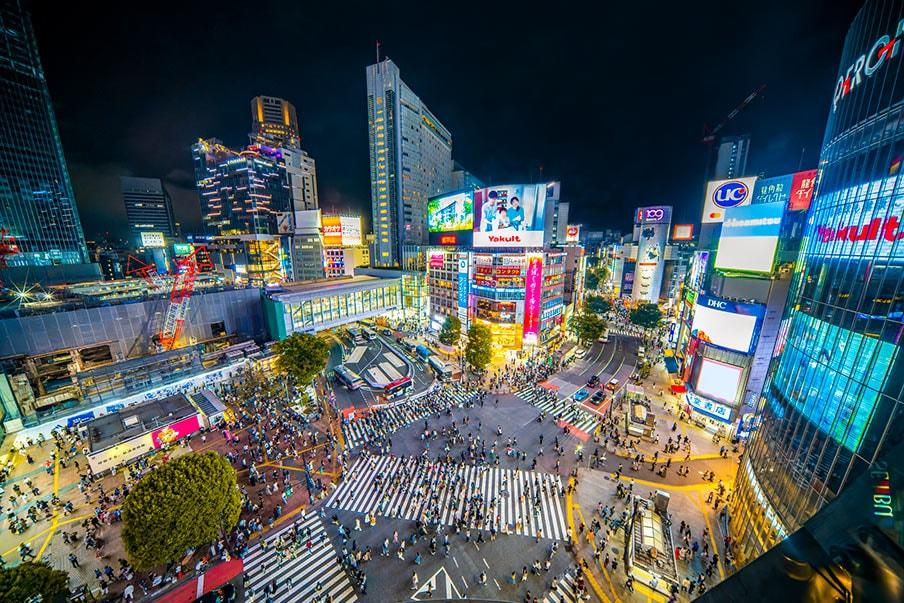

YOUR GUIDE TO SHIBUYA, JAPAN
Explore Shibuya
Shibuya is a well-known area in Tokyo that attracts people from all over the world. Its busy streets and bright city lights make it a popular place to explore. Whether you are visiting for the first time or just want to learn more about the area, this guide can help you discover what Shibuya has to offer.
Start Exploring →
EXPLORE SHIBUYA
There's Plenty to Discover
There is a lot to experience in Shibuya, even if you have never visited Japan before. The area has its own atmosphere, and exploring it is a great way to get a feel for life in Tokyo. This guide will introduce you to some places worth visiting during your trip.
Places to Visit
Not sure where to go first? Explore some of Shibuya's most popular spots and find a place that interests you.
Explore places →Food & Culture
Food is a big part of experiencing a new place. Take a look at some Japanese dishes you can try while spending time in Shibuya.
Explore food →